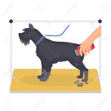

Pelo Largo
Se considera pelo largo cuando mide más de seis centímetros, aproximadamente.
El pelaje largo suele ser frágil y se cae continuamente a lo largo del año, especialmente en las épocas de muda.
Este tipo de pelo es el más complicado de cuidar, ya que requiere cepillados, baños, desenredos, desparasitaciones y cortes continuos.
No obstante, un pelo de este tipo bien tratado luce estupendamente.
La raza de perro más característica con este tipo de pelo es la del afgano. Estos animales lucen una melena larguísima y preciosa.
Otras razas con esta tipología capilar son los yorkshire terrier o los malteses
Nuestros servicios
EL COSTO VARIA DEPENDE AL ESTADO DEL PELO DEL PERRO PERO EL PRESUPUESTO ES ENTRE 60Bs a 120Bs
| Bañado y Cepillado |
Corte de uñas |
Corte de Pelo segun la raza |
Revisión Bucal,Cepillado de Dientes |
Aplicación De Colonia |
 |
 |
 |
 |
 |
Sugerencias:
- Cepillar de manera regular, con el cepillo idóneo y en el momento adecuado.
- Cuidar su alimentación, vital para cuidar el pelo de un perro
- Mantener la higiene de hocico, cola, ojos y patas